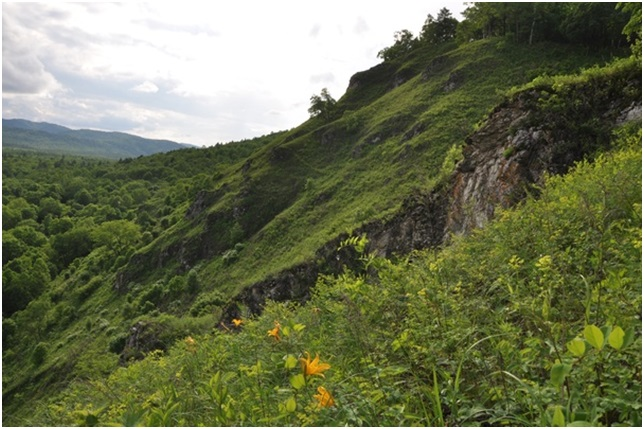
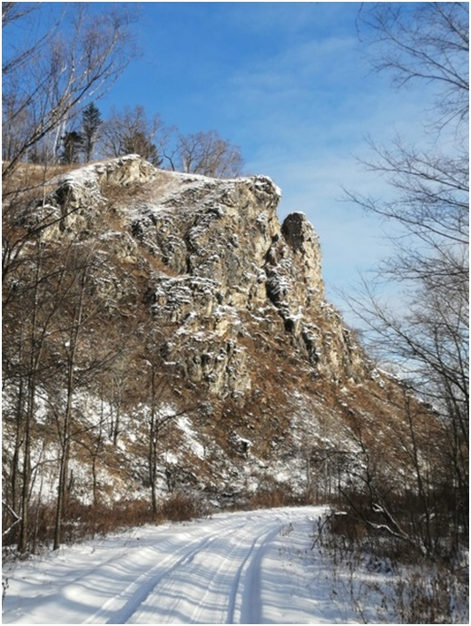

21. Биджанское обнажение
Ботанический памятник природы областного значения "Биджанское обнажение" был образован 26 ноября 1999 года в целях сохранения природного комплекса скального обнажения как места обитания растений, нуждающихся в особой охране и занесенных в Красную книгу Российской Федерации и Красную книгу Еврейской автономной области.
🌿 Памятник природы расположен на территории Еврейской автономной области, в Облученском муниципальном районе, в 9 км к юго-западу от села Теплые Ключи, в 100 м к северу от моста через р. Биджан, в 12 км к востоку от устья р. Вторая Сафониха.
🌿 Биджанское обнажение представляет собой участок скального обнажения юго-восточной части низкогорного Сутарского хребта с абсолютной высотой более 200 м, частично покрытый растительностью.
📌 Особо ценным видом, произрастающим на территории Биджанского обнажения, является соссюрея блестящая - узкоареальный эндемик, встречающийся только в Еврейской автономной области. Вид занесен в Красную книгу ЕАО.
📌 У подножия обнажения встречается редкое ценное лекарственное растение - колокольчик мелковолосистый, занесенный в Красную книгу ЕАО.

